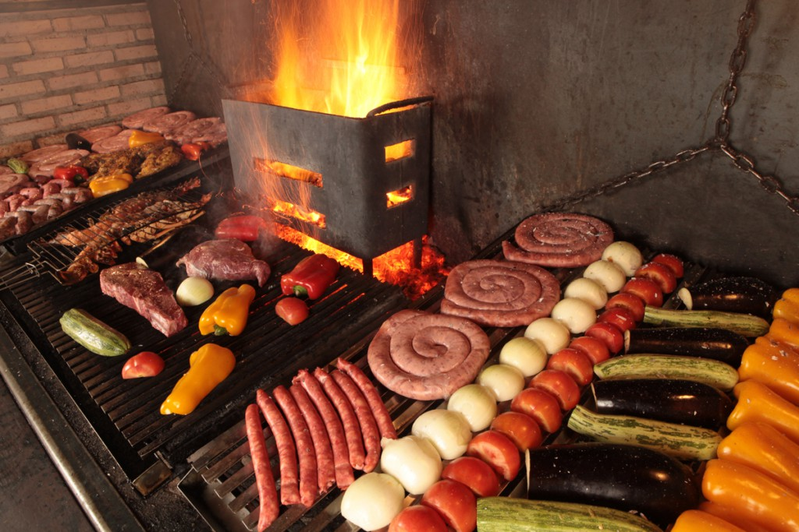
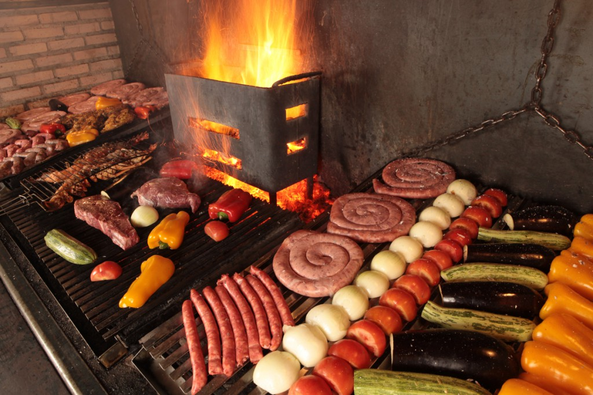

Cortes principais
Exemplos de cortes que podem compor a sua experiência:
- Ancho · Chorizo · Prime Rib
- Picanha Angus selecionada
- Cortes especiais sob consulta
Não é somente um churrasco. É uma noite construída em torno do fogo, pensada para quem valoriza silêncio elegante, carne no ponto perfeito e serviço de alto nível te dando a sensação de restaurante de luxo — isso dentro da sua casa ou do seu evento.
Poucas datas. Produção limitada. Cada experiência é desenhada sob medida para quem entende que nem todo encontro merece a mesma parrilla.
Mais do que um churrasco: uma condução completa do início ao fim, com ambiente, ritmo de serviço e cortes pensados para o seu tipo de evento.
Cada Parrilla Experience é desenhada como uma ocasião singular. Nós levamos a estrutura, a equipe, os cortes selecionados e toda a mise en place para que você possa apenas receber seus convidados — e viver o momento.
Da primeira brasa ao último corte servido, tudo é pensado para que o serviço seja fluido, a apresentação esteja impecável e o clima seja de aconchego e sofisticação.
Seleção criteriosa de cortes bovinos de alta procedência, com foco em textura, marmoreio e sabor, escolhidos de acordo com o perfil do seu evento.
Preparo na parrilla, controle de calor, pontos de carne ajustados para o serviço e sequência pensada para que todos recebam o melhor momento de cada corte.
Equipe discreta, postura profissional e atenção ao detalhe — para que tudo funcione com naturalidade, sem tirar o protagonismo do encontro.
Montamos o menu conforme o estilo do seu evento — intimista, familiar, comemorativo ou corporativo.
Exemplos de cortes que podem compor a sua experiência:
Algumas possibilidades para compor o serviço:
O que está envolvido na Parrilla Experience:
Adaptamos a Parrilla Experience ao tamanho e ao propósito do seu encontro.
Ideal para quem deseja receber poucas pessoas com máxima atenção aos detalhes. Serviço mais próximo, tempo generoso entre os cortes e ambiente aconchegante.
Comemorações, aniversários e encontros especiais — com foco em conforto, sequência fluida de serviço e cortes pensados para agradar diferentes paladares.
Para encontros de equipe, clientes ou convidados especiais. Estilo discreto, serviço organizado e presença profissional do início ao fim.
Alguns registros que traduzem o clima da parrilla, da luz e da presença em torno do fogo.
 



Se você quer que o seu próximo encontro tenha a presença do fogo, da parrilla e de um serviço cuidado nos detalhes, a Parrilla Experience foi criada para isso.
Falar com a Fabíola agora